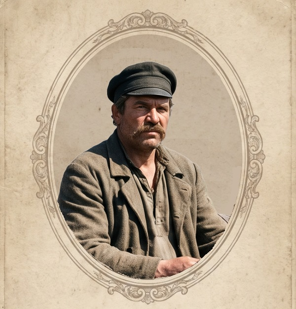

роки життя невідомі; орієнтовно — кінець XIX ст. – 1940-ві
Років народження й смерті немає. Хронологію можна лише приблизно вивести з подій, тому записи нижче — орієнтири, а не точні дати.
Повне родинне дерево — на сторінці Родовід Кукси. Гаплогрупа R-CTS1211 передається по чоловічій лінії, тому вона спільна для Філімона та його сина Петра.
Філімон мав гостре відчуття свободи, не терпів жодного гноблення й прагнув бути господарем: мати землю, будинок, клуню, коней, реманент. Цьому заважала інвалідність — одна нога була коротшою. Це сталося в дитинстві, коли він босоніж вибіг на сніг дивитися на пожежу сусіднього будинку. Відморожена нога перестала рости.
Через це його не вважали повноцінним робітником і тим більше майбутнім господарем, тож віддали учнем до шевця, де він вчився шити взуття. Але молодий Філімон не змирився з таким станом.
Філімон зібрався й поїхав в Одесу на заробітки. Там він працював біндюжником — возив кіньми в морський порт бочки з вином. Заробляв один царський рубель на день, а якщо траплявся підробіток, то додатково один чи навіть два рублі.
В Одесі він був свідком революції 1905–1907 років і потім багато розповідав про ті часи, особливо про звірства козаків, місцевих шахраїв та бандитів. Саме ця деталь дає змогу приблизно датувати його молодість.
Через вісім років Філімон повернувся додому господарювати. На зароблені гроші він купив землю, побудував будинок, клуню, придбав реманент.
Новий маєток у самому центрі, збудований на власно зароблені кошти, був настільки якісним і привабливим, що радянська влада використала його як свою штаб-квартиру, а згодом, коли прийшли німці, там була німецька штаб-квартира.
Усе, що Філімон збудував, він утратив у роки колективізації. У 30-х роках він добровільно віддав своє майно в колгосп, окрім коней, яких дуже любив. Коней він продав міліцейському відділку, і місцева влада кваліфікувала це як злочин.
Передчуваючи арешт, Філімон покинув дім і сім'ю та поїхав у Краматорськ, де влаштувався на металургійний комбінат. Рік він возив тачкою залізну руду в доменну піч. Пізніше дружина Ганна розповідала, що його одяг при пранні довго зафарбовував воду в коричневий колір від руди.
Через рік уночі він повернувся додому в надії, що справу про продаж коней закрито. Однак уже вранці наступного дня його заарештували. Є підозра, що хтось із сусідів бачив його повернення й повідомив органам НКВС. Суд відбувся дуже швидко, і Філімона етапували в Хабаровський край — спочатку в село Мала Бушуйка, а потім у Велику Бушуйку.
Спершу була робота на лісоповалі, а потім — банщиком. Орієнтовно три роки він провів у Сибіру, далі — на поселенні. Повертатися до родини суворо забороняли, тож найближчим місцем проживання став Бердичів, де він працював на місцевому цукровому заводі.
Філімон повернувся із заслання в червні 1941 року, коли Любарщина була окупована німецькими військами. Невідомо, чи дожив він до звільнення в 1944 році; за деякими даними, не дочекався звільнення від німців.
З родинних розмов зрозуміло: головним для Філімона була свобода і власна справа. Інвалідність, яка в очах сучасників робила його «неповноцінним», він переборов працею — від учня шевця до господаря з найкращим маєтком у центрі. Саме цей маєток і плоди його праці в підсумку були в нього відібрані.
Джерело: родинні перекази. Біографія поступово доповнюватиметься — фотографіями, документами та уточненими датами.